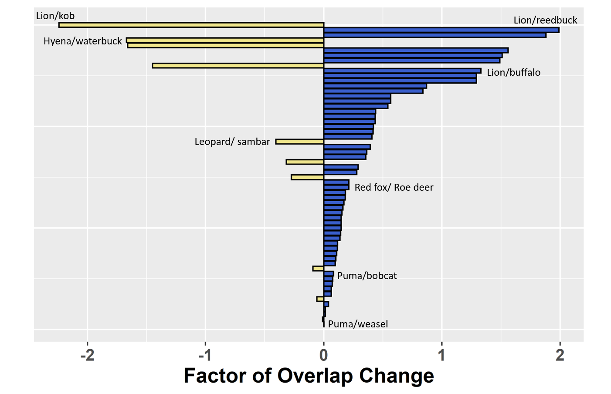

Human activity, from hunting to hiking, can create a landscape of fear that causes wildlife to shift their temporal activity away from humans. Most predator-prey couples maintain a small amount of temporal overlap, but these shifts can push a prey's cycle further into a predator's activity cycle. Conversely, more human-fearing predators might be completely separated from their main prey's cycle and must switch to another prey.

This data set is comprised of 60 predator-prey or top predator-mesopredator couplings. For each coupling, the temporal activity for each trophic level was recorded in both low human disturbance and high human disturbance conditions. We then analyzed that data and calculated the change in the factor of temporal overlap in R, and plotted the change of overlap for each pairing. This data visualization will be incorporated into a future publication on how human-based activity affects temporal cascades throughout all trophic levels.
